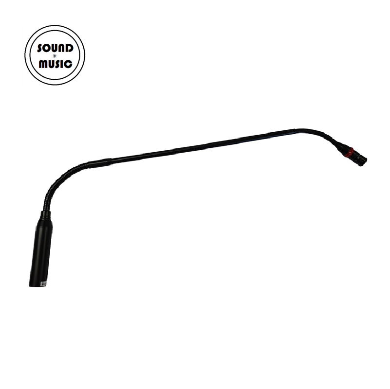

GCL-949는 LED 라이트 링을 내장한 소형 백 일렉트렛 콘덴서 구스넥 마이크입니다. 38cm(15인치) 플렉시블 구스넥으로 컴팩트한 설치가 가능하며, 마이크 선단의 LED 표시등으로 수음 상태를 시각적으로 확인할 수 있습니다. 48V 팬텀파워로 동작하고 XLR-M 밸런스드 출력을 제공합니다.

LED 라이트 링을 내장한 소형 백 일렉트렛 콘덴서 구스넥 마이크. 컴팩트한 38cm 구스넥과 시각적 상태 표시로 회의·강의 환경에 최적화되었습니다.
GCL-949는 백 일렉트렛 콘덴서(Back Electret Condenser) 방식의 단일지향성 캡슐을 탑재한 구스넥 마이크입니다. 소구경(Small-diameter) 슬림 디자인으로 설치 공간을 최소화하면서도 깔끔하고 매끄러운 외관을 유지하며, 음질이 우수한 전문 녹음·음향 보강·방송 수음에 적합합니다.
마이크 선단에 내장된 LED 라이트 링은 수음 상태를 시각적으로 표시하여, 회의 중 발언자 확인이나 음소거 상태 파악이 직관적으로 가능합니다. 38cm(15인치) 플렉시블 구스넥은 유연하게 조절할 수 있으며, 포함된 스냅온 폼 윈드스크린이 바람 소음과 파열음(Popping)을 효과적으로 저감합니다. XLR-M 커넥터로 로우 임피던스 밸런스드 출력을 제공하며, 48V 팬텀파워로 동작합니다.
GCL-949 구스넥 마이크의 핵심 포인트입니다.
GCL-949의 상세 기술 사양입니다.
| 모델명 | GCL-949-15 |
|---|---|
| 타입 | Back Electret Condenser |
| 지향성 | Uni-Directional (단일지향성) |
| 주파수 응답 | 50Hz – 18kHz |
| 감도 | -46dB ± 3dB (f=1kHz, S.P.L=1Pa, 0dB=1V/Pa) |
| 출력 임피던스 | 680Ω ± 30% (f=1kHz) |
| S/N 비 | ≥ 70dB |
| 전원 | Phantom DC 48V |
| 출력 커넥터 | 3-pin XLR Male (Lo-Z Balanced) |
| 구스넥 길이 | 38cm (15인치) |
| LED | 라이트 링 내장 (수음 상태 표시) |
| 구성품 | 마이크 본체, 전용 스냅온 폼 윈드스크린 |
GCL-949 구스넥 마이크의 대표적인 활용 분야입니다.